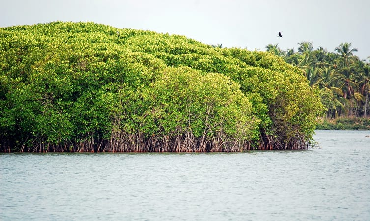
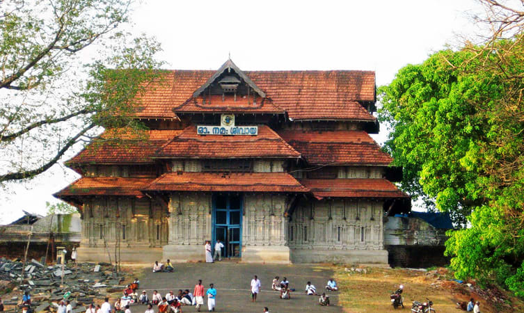
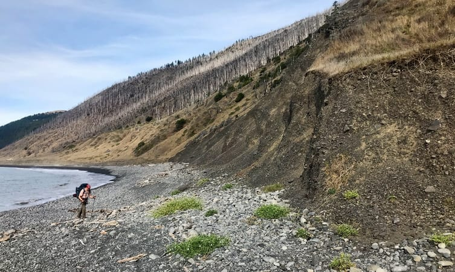

1. Punnathur Kotta

2. Shakthan Thampuran Palace

3. Vilangan Kunnu

4. Athirappilly Waterfalls

5. Chavakkad Beach

6. Chettuva Backwater

7. Paramekkavu Bhagavathy Temple

8. Vazhachal Falls

9. Vadakkunnathan Temple

10. Cheppara

The cultural capital of Kerala, the Poorams or temple festivals in Thrissur draw in thousands of people every single year as these carnivals encapsulate every single part of Kerala's rich heritage. These are a hotbed of folk art performances and heritage tours that will give you an in depth look into some of the grandest traditions of the State. From majestic elephants to colourful pulikali processions to the world renowned Thrissur Pooram, there is always a festive atmosphere in the air. The district is also the abode of several cultural centres like Kerala Kalamandalam, Sahitya Academy and the Sangeetha Nataka Academy. Thrissur is a place one must visit at least once in their lifetime. The people, swaying with the beats of the chenda, shall help you understand the true heart and spirit of Kerala.
Tourist Information Offices:
DTPC, Palace Road, Chembukkavu Ph: 2320800
Guruvayoor Ph: 2550400 Website: www.dtpcthrissur.com
Devaswom Information Centre, Pamba Ph.: +91 4735 203339
Devaswom Guest House, Sabarimala Ph.: +91 4735 202056
Devaswom Information Centre, Sabarimala Ph.: +91 4735 202048
Getting there
By road: The district is well connected to all major towns in Kerala. Thrissur KSRTC Bus Station, near the railway station operates long distance and inter-state services Ph: 2421150 Sakthan Thampuran Bus Stand is 1 km away from town The North Bus Stand is in the heart of the town.
By rail: Thrissur is an important railhead of the Southern Railways.
By air: Cochin International Airport (58 km)